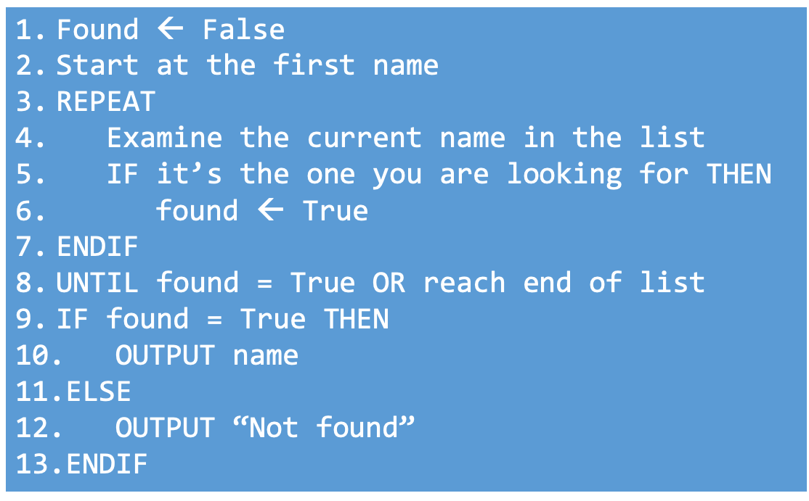
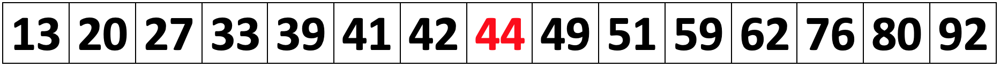
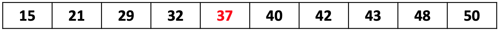
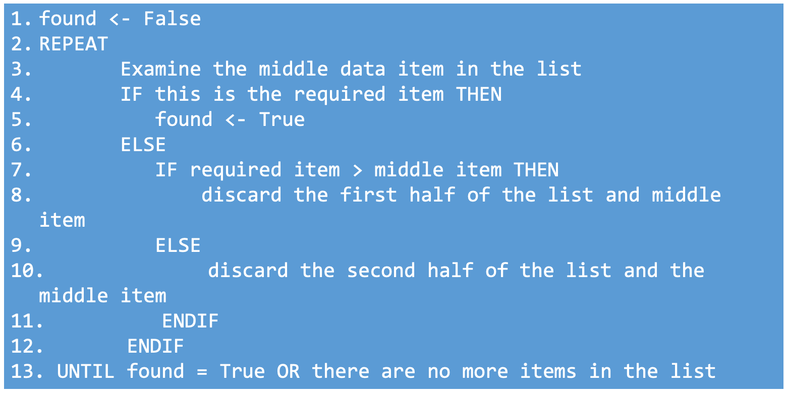

3.1.3 Searching Algorithms
Table of Contents
1 Searching Algorithms
Learn It: What are Searching Algorithms?
Searching Algorithms are used to determine whether a specific piece of data exists within a data structure. If it does exist, a search algorithm will locate it and retrieve the information.
- Thousands of software applications, including
databasesorcommercial search enginessuch asGoogle, depend on the ability toquickly searchthrough huge amounts of data tofind a particular item. - There are many different types of searching algorithms. We will look at
two well-known algorithmsfor searching and sorting:Linear and Binary search algorithms.

- Searching and Sorting Algorithms are used in lots of programs to
make
data easiertoaccessandunderstand. - Computer game leader boards are sorted from the highest score to the lowest score to make it easy to find the winner and your position in the list.
- Search engines like Google use
special algorithmsto help us find themost useful search results. Online shopping websitesorder their products by type, so that you can click straight to the department that you're looking for, rather than searching through the whole site.
Question - Can you think of other online companies that store huge amounts of data, which often requires you to search through so that you can find a particular item quickly?
2 Linear Searching Algorithms
Learn It: What is a Linear Search?
Linear Search - A search algorithm that begins at one end of a data structure, checking each data item in turn until the required item is found, or the end of the structure is reached.
When the data is unsorted, the only sensible option when searching for a particular item is to use aLinear Search.- Linear Searches
startat thebeginningandsequentiallylook ateach itemin a listuntil you find the oneyou arelooking foror untilallof theitemshave beensearched. - You could be lucky and quickly find the item at the beginning of the list, or it could be at the end.
- Linear Searches are
relatively simple, but they areinefficientwhen searching throughlong lists.
Linear and Binary Searching Algorithms Explained
Linear Search Example
 Here is an algorithm for a Linear Search
Here is an algorithm for a Linear Search

Badge It: Linear Search Algorithm
Silver: Complete the Linear Search Algorithm shown in the Trinket window below:
- Upload to Algorithms - Searching Algorithms: Silver on BourneToLearn
3 Binary Searching Algorithms
Learn It: What is a Binary Search?
Binary Search - A search algorithm that begins in the middle of a data structure, eliminating half of the remaining data with each pass. Binary searches are only appropriate when the data to be search is sorted.
When the data is sorted,(i.e. in numerical or alphabetical order), you can use a much moreefficientalgorithm called aBinary Search.- It works by
repeatedly dividing in halfthe portion of the data list that could contain the required data item. - This is
continueduntil there isonly one item in the listyou are examining. - Binary Searches are quicker because, at each stage, half of the remaining data is disregarded.
- If a list of
one million elementswere to be searched using a binary search, it would take no more than20 iterationsto find a particular piece of data or discover that the data is not in the list. - A list of
one billion itemswould only require30 iterations. - A
binary searchismore efficientthan alinear searchsince it will, on average, find a search items more quickly than a linear search. However, binary searches do not work onunsorted data, so efficiency is not the only consideration.
Binary Search Example

Example 1 - Uneven List Binary Search
- Consider the following ordered list of 15 items. We want to find out
whether the number
51is in the list.

- Step 1: The middle term is 44; therefore, we can discard all data items less than or equal to 44.
- Step 2: The middle term is 62, so we can discard all data items greater than or equal to 62.

- Step 3: The middle term is 51 – So we have found the data item.
- Note: That if there are an even number of items in the list, for example 8 items, the fourth, not the fifth item is taken to be the middle item.
Example 2 - Even List Binary Search
- Consider the following list of 10 items. We want to find out whether the number
50is in the list of items.

- Step 1: The fifth number in the list is taken to be the middle number - we can therefore discard all data items less than or equal to 37.
- Step 2: The third number in the list is now the middle number - we can therefore discard all data items less than or equal to 43.
- Step 3: As there are now only two numbers left in the list, when split 48 becomes the middle number. Once we discard 48 we are left with the number
50.
In an even list, the number left of the central split is taken to be the middle number.
Here is an algorithm for a Binary Search

Badge It: Binary Search Algorithm
Gold: Look at the Binary Search Algorithm shown in the Trinket below:
- Change the binary list to fifteen integer numbers and ask the user to input a value to search for.
- Output a message to say that the value is found or not in the list.
- Upload to Algorithms - Searching Algorithms: Gold on BourneToLearn
Badge It: Trace Tables
Platinum: Answer the following questions:
- A programmer wants to implement a search algorithm to be used with
small lists [4,6,8,12,15,16,21].
- Explain how a linear search would search for the integer '15'.
- What property of this list [4,6,8,12,15,21], means the programmer could use a binary search algorithm?
- The programmer knows that a binary search algorithm is more efficient than a linear search algorithm. Explain why the efficiency of these two algorithms in not an important factor when choosing what algorithm to implement for the list shown above?
- Upload to Algorithms - Efficiency: Platinum on BourneToLearn
4 Comparing Linear and Binary Searching Algorithms
Learn It: Pro's and Con's of each search?
Linear Vs Binary Search Algorithms
| Linear Search | Binary Search |
|---|---|
| + Works with unsorted lists | + Far more efficient |
| - Slower than a binary search | - Will not work on unsorted lists |
The linear search algorithm is fine for small lists, but very inefficient for large lists. The average time taken to search a thoussand items would be 100 times longer than the time taken to search 10 items. If you had to search a database of 10 million car registrations to find who owns a certain car, it would take a very long time.
In contrast, the binary search algorithm is extremely efficient. Each time an item is examined, if it is not the correct item, half of the list is discarded. In a list of 10 million items, only 24 items would need to be examined. That's because 10,000,000 is less than 2^24. In general, if there are fewer than 2^n items (but at least 2^n-1), the maximum number of items to be examined is n.
A key benefit of the linear search is that it can be done on an unsorted list - The items do not have to be in sequence. If items are frequently added or deleted from a list, this would save the extra work needed to keep the list in sequence in order to perform a binary search.